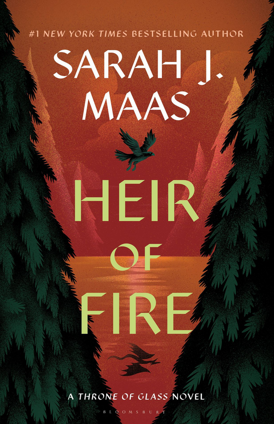

This past summer, my family and I went to Maui, as we have done every summer since I was 12. It is my favorite place in the world to be, and I hope to be able to keep the tradition alive, remaining loyal to Maui every summer for the rest of my life! As cheesy as it sounds, it was a trip full of happiness, including walking on our favorite coastal trails, feeling the sunshine soak into our skin, one incident involving my Mom sitting in dog poop on the beach, and spotting turtles swimming every morning. I can hear the birds chirping there now!
From the time I was about 16 or 17 to 20 years old, my Mom and I had a highly esteemed and cherished Sunday night tradition of going to Ramen Man. It was a tiny, borderline dirty, hole-in-the-wall spot on 45th in Seattle, and yet, nothing was more delicious than their shoyu ramen with egg noodles, a side of rice, gyoza, and two cans of coke, our go to order each and every Sunday night. Sadly, Ramen Man closed during covid and its tiny, barely clean, hole-in-the-wall location has now been replaced with something new. But every time I drive down 45th, I can picture my Mom and I in their tiny basement seating area and all of our memories there. So, even though it no longer exists, Ramen Man will always be my favorite restaurant!
see Ramen Man's now archival website here

These are my grandma's rolls. Nothing, and I mean nothing, is more delicious than them! The recipe, passed down from her mom, is framed on the wall of her kitchen. If they're made by someone other than my grandma or so much as a different butter is used,
you can tell! They are made every Thanksgiving and Christmas without fail. Growing up, my sister and I would spend the night before Thanksgiving and also Christmas Eve at our grandparents and help our Grandma make the rolls, something we always treasured.
| Book | Cover | Author | Plot |
|---|---|---|---|
| The Road of Bones | Demi Winters | An immersive world blending fairytale with Vikings, The Road of Bones leads you on an adrenaline-pumping journey, drawing inspiration from Nordic myths and legends. | |
| Mortal Heart | Robin LaFevers | The last in the His Fair Assassin series, Mortal Heart provides the perfect ending to the triology about nuns in 15th century Brittany whose convent is a front for how they are actually assassins in Mortain (Death)'s name, providing a happy ending for Mortain himself in this book. | |
| Heir of Fire |  | Sarah J. Maas | The third of the Throne of Glass installment, readers think they know the characters in the series by this point, but Heir of Fire marks a turning point in Celaena's journey, as she transforms into Aelin. It's a book filled with significant character development and changes, and where readers are first introduced to Rowan. |
| The American Heiress | Daisy Goodwin | The American Heiress tells a story of misunderstandings and missed opportunities, evoking a bittersweet sadness that lingers as you turn its pages. It serves as a poignant reminder of the real-life losses we all face. |
Now that you know a bit about me, I'd love to learn a little about you in return!